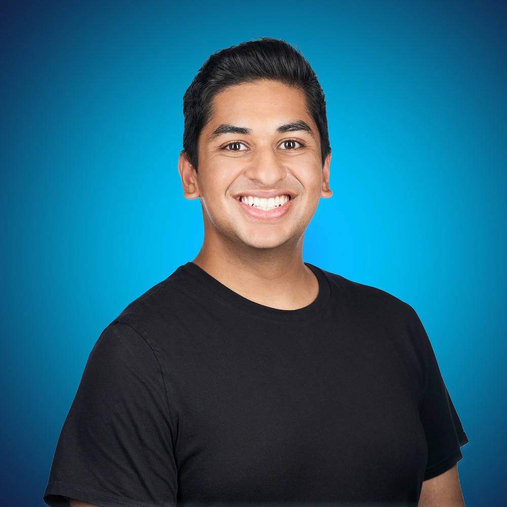

<link rel="import" href="bower_components/polymer/polymer.html">
<link rel="import" href="bower_components/app-layout/app-drawer-layout/app-drawer-layout.html">
<link rel="import" href="bower_components/app-layout/app-drawer/app-drawer.html">
<link rel="import" href="bower_components/app-layout/app-header/app-header.html">
<link rel="import" href="bower_components/app-layout/app-header-layout/app-header-layout.html">
<link rel="import" href="bower_components/app-layout/app-toolbar/app-toolbar.html">
<link rel="import" href="bower_components/iron-flex-layout/iron-flex-layout.html">
<link rel="import" href="bower_components/iron-flex-layout/iron-flex-layout-classes.html">
<link rel="import" href="bower_components/iron-icons/iron-icons.html">
<link rel="import" href="bower_components/iron-icons/maps-icons.html">
<link rel="import" href="bower_components/iron-icons/hardware-icons.html">
<link rel="import" href="bower_components/iron-icons/communication-icons.html">
<link rel="import" href="bower_components/iron-media-query/iron-media-query.html">
<link rel="import" href="bower_components/paper-icon-button/paper-icon-button.html">
<link rel="import" href="bower_components/paper-item/paper-item.html">
<link rel="import" href="bower_components/paper-listbox/paper-listbox.html">
<link rel="import" href="bower_components/paper-tabs/paper-tabs.html">
<link rel="import" href="bower_components/paper-button/paper-button.html">
<link rel="import" href="bower_components/paper-checkbox/paper-checkbox.html">
<link rel="import" href="bower_components/social-media-icons/social-media-icons.html">

<link rel="import" href="contact-form.html">

<script src="bower_components/zenscroll/zenscroll-min.js"></script>

<dom-module id="my-portfolio">

  <template>

    <style>
      :host {
        @apply --paper-font-common-base;
      }

      app-header-layout {
        z-index: 50;
      }

      header {
        @apply --layout-vertical;
        @apply --layout-center-center;
        height: calc(100vh - 64px);
        padding: 0 16px;
        background-image: url('images/blue-mtns.png');
        background-repeat: no-repeat;
        background-size: cover;
        color: white;
        text-align: left;
      }

      header>div>div {
        margin: 0 20px;
      }

      header>div>div>h1 {
        font-size: 56px;
        font-weight: 300;
        margin: 0;
      }

      header>div>p {
        font-size: 32px;
      }

      social-media-icons {
        padding: 5px;
        opacity: 0.6;
      }

      .hover {
        opacity: 1.0;
      }

      a {
        text-decoration: none !important;
        color: black;
      }

      .headerBody {
        @apply(--layout-horizontal);
      }

      .contact {
        width: 250px;
        height: 250px;
        margin-top: 25px;
        margin-right: 75px;
        border-radius: 125px;
      }

      .container {
        position: relative;
      }

      .footer {
        position: absolute;
        bottom: 0;
        width: 90%;
        height: 100px;
        padding-left: 50px;
        padding-right: 50px;
      }

      .footer>hr {
        margin-bottom: 30px;
      }

      .section {
        color: white;
        @apply(--layout-horizontal);
      }

      .section#About,
      .section#Projects,
      .section#Connect {
        background: #292A2A;
      }

      .section#Experiences,
      .section#Awards {
        background: #2B2C2C;
      }

      .section .left {
        width: 25%;
        padding: 100px 50px;
        text-align: right;
      }

      .section .left>hr {
        margin-right: 0;
        width: 50px;
        height: 2px;
        border-color: #F1B200;
        color: #F1B200;
        background-color: #F1B200;
      }

      .section .left>p {
        font-style: italic;
      }

      .section .right {
        width: 75%;
        padding: 100px 50px;
      }

      .section .right>p {
        margin-top: 8px;
      }

      .section#About>.right,
      .section#Projects>.right,
      .section#Connect>.right {
        background: #2B2C2C;
      }

      .section#Experiences>.right,
      .section#Awards>.right {
        background: #2D2E2E;
      }

      #grid {
        flex-wrap: wrap;
        @apply(--layout-horizontal);
      }

      #grid>#container>a>paper-button {
        background-color: #F1B200;
        --paper-button-ink-color: black;
      }

      #grid>#container>a>paper-button:hover {
        color: white;
      }

      #container {
        background-color: white;
        width: 40%;
        margin: 10px;
        color: black;
        padding: 15px;
        border-radius: 2px;
        box-sizing: border-box;
      }

      @media (max-width: 1040px) {
        #container {
          width: 100%;
          padding: 20px;
        }

        #categories {
          text-align: center;
        }
      }

      @media (max-width: 767px) {
        #container {
          width: 45%;
        }
      }

      @media (max-width: 540px) {
        #container {
          width: 100%;
          padding: 20px;
        }
      }

      .title {
        margin-bottom: 5px;
      }

      .organization {
        margin-top: 5px;
      }

      .description {
        text-align: left;
        font-size: 14px;
      }

      paper-checkbox {
        --paper-checkbox-label-color: white;
        --paper-checkbox-checked-color: #F1B200;
        --paper-checkbox-unchecked-color: #F1B200;
      }

      .experience,
      .award {
        @apply(--layout-horizontal);
      }

      #timeline {
        min-width: 120px;
        margin-right: 30px;
        margin-top: 1em;
      }

      .dates {
        width: 100px;
      }

      .dates span {
        display: block;
        padding: 6px;
        text-align: center;
      }

      .dates #end {
        z-index: 3;
        position: relative;
        background-color: #FFCC00;
        box-shadow: 0px 2px 6px -3px rgba(68, 68, 68, 0.5);
      }

      .dates #start {
        background-color: #E6B10A;
      }

      @media (max-width: 768px) {
        .headerBody {
          @apply(--layout-vertical);
          text-align: center;
        }

        .headerBody>div>img {
          width: 150px;
          height: 150px;
          border-radius: 75px;
          margin: 0;
        }

        header>div>div>h1 {
          font-size: 76px;
        }

        header>div div> {
          margin: 0;
        }

        .section {
          text-align: -webkit-center;
          @apply(--layout-vertical);
        }

        .section#Connect>.right {
          text-align: left;
        }

        .section .right>p {
          text-align: left;
        }

        .section .left,
        .section .right {
          padding: 50px 25px;
          text-align: center;
          width: 86%;
        }

        .section .left>hr {
          margin: auto;
        }

        .experience,
        .award {
          @apply(--layout-vertical);
          text-align: left;
        }
      }

      app-toolbar {
        background-color: white;
      }

      .main-header {
        box-shadow: 0px 5px 6px -3px rgba(0, 0, 0, 0.4);
      }

      .tabs-bar {
        margin: auto;
      }

      iron-icon {
        margin-right: 5px;
      }

      paper-tabs {
        --paper-tabs-selection-bar-color: black;
        height: 63px;
        max-width: 640px;
      }

      paper-tab {
        --paper-tab-ink: #aaa;
        text-transform: uppercase;
      }

      [hidden] {
        display: none !important;
      }

      #Connect>.right>.container {
        max-width: 500px;
      }

      contact-form {
        --paper-input-container-input-color: #ffffff;
        --paper-input-container-color: #ffffff;
        --paper-input-container-focus-color: #FFCC00;
        --contact-form-submit-background-color: #FFCC00;
        --contact-form-submit-color: #000000;
        --contact-form-submit-hover-color: #ffffff;
      }
    </style>
    <style is="custom-style" include="iron-flex iron-flex-alignment"></style>


    <app-drawer-layout force-narrow>

      <app-drawer id="drawer" slot="drawer">

        <app-toolbar></app-toolbar>

        <!-- Nav on mobile: side nav menu -->
        <paper-listbox selected="{{selected}}" attr-for-selected="name">
          <template is="dom-repeat" items="{{items}}">
            <paper-item name$="{{item}}">{{item}}</paper-item>
          </template>
        </paper-listbox>

      </app-drawer>

      <app-header-layout>
        <app-header fixed class="main-header" slot="header">

          <app-toolbar>
            <paper-icon-button class="menu-button" icon="menu" drawer-toggle hidden$="{{wideLayout}}">
            </paper-icon-button>
            <!-- Nav on desktop: tabs -->
            <div class="tabs-bar" hidden$="{{!wideLayout}}">
              <paper-tabs selected="{{selected}}" attr-for-selected="name">
                <template is="dom-repeat" items="{{items}}">
                  <paper-tab name$="{{item}}">{{item}}</paper-tab>
                </template>
              </paper-tabs>
            </div>
          </app-toolbar>

        </app-header>
        <header id="Home" class="container">
          <div class="headerBody">
            <div>
              
            </div>
            <div>
              <h3>HELLO, I AM</h3>
              <h1>Pratik</h1>
              <h1><strong>Vaidya</strong></h1>
              <h2>Software Engineer. Creative Thinker. Adventurer.</h2>
              <a target="_blank" href="https://github.com/pratiksvaidya">
                <social-media-icons icon="github" color="#ffffff" size="24"></social-media-icons>
              </a>
              <a target="_blank" href="https://www.linkedin.com/in/pratikvaidya/">
                <social-media-icons icon="linkedin" color="#ffffff" size="24"></social-media-icons>
              </a>
              <a target="_blank" href="https://medium.com/@psvaidya">
                <social-media-icons icon="medium" color="#ffffff" size="24"></social-media-icons>
              </a>
              <a target="_blank" href="https://twitter.com/pratiksventures">
                <social-media-icons icon="twitter" color="#ffffff" size="24"></social-media-icons>
              </a>
            </div>
          </div>
          <template is="dom-if" if="[[isDesktop]]">
            <div class="footer">
              <hr>
              <div class="layout horizontal">
                <div class="flex">
                  <iron-icon icon="maps:place"></iron-icon>
                  Seattle, WA
                </div>
                <div class="flex">
                  <iron-icon icon="communication:email"></iron-icon>
                  pratik.vaidya@outlook.com
                </div>
                <div class="">
                  <iron-icon icon="communication:textsms"></iron-icon>
                  (425) 286 - 4875
                </div>
              </div>
            </div>
          </template>
        </header>
      </app-header-layout>

      <div id="About" class="section">
        <div class="left">
          <hr>
          <h2>About</h2>
          <p>A little about me</p>
        </div>
        <div class="right">
          <p>
            "Life begins at the end of your comfort zone" is not as much a cliche for me as it is a guiding principle to
            push myself into new experiences.
            <br><br>
            I seek opportunities to combine my passion of serving others with the science of predictive and prescriptive
            analytics that will fundamentally change our way of life. I'm excited about leveraging data to tackle
            interesting problems, inform diverse audiences and influence important decisions.
            <br><br>
            My experiences as an EMT and Red Cross volunteer present each day as an opportunity to face situations that
            can make a lasting impact on someone's life. I continue to learn and adapt to different leadership styles,
            communication techniques, strategies, and creative thinking across the globe as a current leader and former
            National Venturing President in the Boy Scouts of America.
          </p>
        </div>
      </div>
      <div id="Experiences" class="section">
        <div class="left">
          <hr>
          <h2>Experiences</h2>
          <p>What I love to do</p>
        </div>
        <div class="right">
          <p id="categories">
            <strong>CATEGORIES:</strong>
            <paper-checkbox class="experienceCategories" toggles id="internship">Internships</paper-checkbox> /
            <paper-checkbox class="experienceCategories" toggles id="volunteer">Volunteer Experiences</paper-checkbox> /
            <paper-checkbox class="experienceCategories" toggles id="job">Jobs</paper-checkbox>
          </p>

          <template is="dom-repeat" items="[[loadExperiences(activeExperienceCategories)]]">
            <div class="experience">
              <div id="timeline">
                <div class="dates">
                  <span id="end">[[item.end_date]]</span>
                  <span id="start">[[item.start_date]]</span>
                </div>
              </div>
              <div>
                <h3>[[item.position]]</h3>
                <h4>[[item.organization]]</h4>
                <p>
                  [[item.description]]
                </p>
              </div>
            </div>
          </template>
        </div>
      </div>
      <div id="Projects" class="section">
        <div class="left">
          <hr>
          <h2>Projects</h2>
          <p>Some hobbies and interests</p>
        </div>
        <div class="right">
          <p id="categories">
            <strong>CATEGORIES:</strong>
            <paper-checkbox class="projectCategories" toggles id="development">Development</paper-checkbox> /
            <paper-checkbox class="projectCategories" toggles id="research">Research</paper-checkbox> /
            <paper-checkbox class="projectCategories" toggles id="scouting">Scouting</paper-checkbox>
          </p>

          <div id="grid">
            <template is="dom-repeat" items="[[loadProjects(activeProjectCategories)]]">
              <div id="container">
                </img>
                <div class="details">
                  <h3 class="title">[[item.title]]</h3>
                  <p class="description">[[item.description]]</p>
                </div>
                <template is="dom-if" if="[[item.read_more]]">
                  <a href="[[item.link]]" tabindex="-1" target="_blank">
                    <paper-button> Read More </paper-button>
                  </a>
                </template>
              </div>
            </template>
          </div>
        </div>
      </div>
      <div id="Awards" class="section">
        <div class="left">
          <hr>
          <h2>Awards</h2>
          <p>Some achievements</p>
        </div>
        <div class="right">
          <div id="grid">
            <template is="dom-repeat" items="[[loadAwards()]]">
              <div id="container">
                <div class="details">
                  <h3 class="title">[[item.name]]</h3>
                  <p class="organization">[[item.organization]]</p>
                  <p class="description">[[item.description]]</p>
                </div>
              </div>
            </template>
          </div>
        </div>
      </div>
      <div id="Connect" class="section">
        <div class="left">
          <hr>
          <h2>Connect</h2>
          <p>Reach out to me</p>
          <a target="_blank" href="https://github.com/pratiksvaidya">
            <social-media-icons icon="github" color="#ffffff" size="24"></social-media-icons>
          </a>
          <a target="_blank" href="https://www.linkedin.com/in/pratikvaidya/">
            <social-media-icons icon="linkedin" color="#ffffff" size="24"></social-media-icons>
          </a>
          <a target="_blank" href="https://medium.com/@psvaidya">
            <social-media-icons icon="medium" color="#ffffff" size="24"></social-media-icons>
          </a>
          <a target="_blank" href="https://twitter.com/pratiksventures">
            <social-media-icons icon="twitter" color="#ffffff" size="24"></social-media-icons>
          </a>
        </div>
        <div class="right">
          <div class="container">
            <contact-form></contact-form>
          </div>
        </div>
      </div>
    </app-drawer-layout>

    <iron-media-query query="min-width: 768px" query-matches="{{wideLayout}}"></iron-media-query>

  </template>

  <script>
    class MyPortfolio extends Polymer.Element {
      static get is() {
        return 'my-portfolio'
      }

      static get properties() {
        return {
          isDesktop: {
            type: Boolean,
            value: false
          },
          selected: {
            type: String,
            value: 'Home'
          },
          wideLayout: {
            type: Boolean,
            value: false,
            observer: '_onLayoutChange',
          },
          items: {
            type: Array,
            value: function () {
              return ['Home', 'About', 'Experiences', 'Projects', 'Awards', 'Connect'];
            }
          }
        }
      }

      _onLayoutChange(wide) {
        var drawer = this.$.drawer;
        if (wide && drawer.opened) {
          drawer.opened = false;
        }
      }
      ready() {
        super.ready();

        this.setupNav();

        if (window.innerWidth > 768) {
          this.isDesktop = true;
        }

        window.addEventListener('resize', () => {
          if (window.innerWidth > 768) {
            this.isDesktop = true;
          }
          else {
            this.isDesktop = false;
          }
        });

        this.socialMediaIcons = [...this.root.querySelectorAll('social-media-icons')];
        this.socialMediaIcons.map(item => {
          item.addEventListener('mouseover', (e) => {
            item.classList.add("hover")
          })

          item.addEventListener('mouseout', (e) => {
            item.classList.remove("hover")
          })
        });

        this.categoryBtns = [...this.root.querySelectorAll('paper-checkbox')];
        this.categoryBtns.map(item => {
          item.active = true;
          item.addEventListener('click', (e) => {
            this.activeExperienceCategories = [...this.root.querySelectorAll('paper-checkbox[active].experienceCategories')];
            this.activeProjectCategories = [...this.root.querySelectorAll('paper-checkbox[active].projectCategories')];
          });

          item.addEventListener('tap', (e) => {
            this.activeExperienceCategories = [...this.root.querySelectorAll('paper-checkbox[active].experienceCategories')];
            this.activeProjectCategories = [...this.root.querySelectorAll('paper-checkbox[active].projectCategories')];
          });
        });

        this.activeExperienceCategories = [...this.root.querySelectorAll('paper-checkbox[active].experienceCategories')];
        this.activeProjectCategories = [...this.root.querySelectorAll('paper-checkbox[active].projectCategories')];
      }

      setupNav() {
        requestAnimationFrame(() => {
          let edgeOffset = 50; // px
          zenscroll.setup(null, edgeOffset);

          if (location.hash !== '') {
            if (location.hash == '#Home') {
              zenscroll.setup(null, 64);
              zenscroll.to(this.root.querySelector(location.hash));
              zenscroll.setup(null, edgeOffset);
            }
            else {
              zenscroll.to(this.root.querySelector(location.hash));
              this.root.querySelector('paper-tabs').selected = location.hash.slice(1);
            }
          }

          this.navItems = [...this.root.querySelectorAll('paper-tab')];
          this.navItems.push(...this.root.querySelectorAll('paper-item'));
          this.navItems.map(item => {
            item.addEventListener('click', () => {
              location.hash = item.getAttribute('name');
              if (location.hash == '#Home') {
                zenscroll.setup(null, 64);
                zenscroll.to(this.root.querySelector("#" + item.getAttribute('name')));
                zenscroll.setup(null, edgeOffset);
              }
              else {
                zenscroll.to(this.root.querySelector("#" + item.getAttribute('name')));
              }
              this.root.querySelector('app-drawer').close();
            });

            item.addEventListener('tap', () => {
              location.hash = item.getAttribute('name');
              if (location.hash == '#Home') {
                zenscroll.setup(null, 64);
                zenscroll.to(this.root.querySelector("#" + item.getAttribute('name')));
                zenscroll.setup(null, edgeOffset);
              }
              else {
                zenscroll.to(this.root.querySelector("#" + item.getAttribute('name')));
              }
              this.root.querySelector('app-drawer').close();
            });
          });
        });
      }

      loadExperiences(activeCategories) {
        let selectedExperiences = [];
        let experiences = [
          {
            start_date: 'Feb 2022',
            end_date: 'Present',
            position: 'Full Stack Software Engineer',
            organization: 'Cents',
            category: 'job'
          },
          {
            start_date: 'Feb 2020',
            end_date: 'Feb 2022',
            position: 'Software Engineer',
            organization: 'Productiv',
            description: "Designed scalable microservices to collect, aggregate, and analyze SaaS application engagement and organizational data. Drove new integrations that allow deeper insights in near real-time. Architected large-scale aggregation pipelines to compute elaborate collaboration and resource level metrics across hundredsof applications and 100,000+ employees. Pioneered a scalable workflow engine service to simplify repeated code patterns, reduce wasted compute infrastructure, and deliver unified auditing and logging capabilities across our platform.",
            category: 'job'
          },
          {
            start_date: 'May 2019',
            end_date: 'Aug 2019',
            position: 'Software Intern',
            organization: 'Tableau Software',
            description: "Developed a language processing feature on the Tableau Prep data augmentation and smart features team from end-to-end. Required a thorough ramp-up and understanding to propose and evaluate architectural-level system designs spanning all layers of the code (C++, Java, Typescript). The specific feature reduced a manual user workflow from 12+ steps to 1, while the architectural restructuring I did will allow similar features to be added easily.",
            category: 'internship'
          },
          {
            start_date: 'May 2018',
            end_date: 'Aug 2018',
            position: 'Software Engineering Intern',
            organization: 'Cerner Corporation',
            description: "Developing functionality to increase accessibility and awareness of data status information on the Lights on Network team, providing 5000 hospitals in 30+ countries valuable insights into the validity of the data received and the resulting implications spanning provider compliance, system configuration, value measurement, and overall experience.",
            category: 'internship'
          },
          {
            start_date: 'April 2017',
            end_date: 'Present',
            position: 'Emergency Medical Technician',
            organization: 'Emergent Health Partners',
            description: "I respond to emergency calls to provide efficient and immediate care to the critically ill and injured, and to transport the patient to a medical facility. I continue to gain patient contact experience, work under severe pressure and tight deadlines, and collaborate with my partner to ensure we arrive on scene expeditiously and safely, treat the patient effectively, and transport him/her appropriately.",
            category: 'job'
          },
          {
            start_date: 'Feb 2017',
            end_date: 'Nov 2017',
            position: 'Engineering Intern',
            organization: 'Wellopp',
            description: "I'm responsible for creating innovative tools that collect social determinant data from patients and perform analysis to provide personalized guidance, improve patient outcomes, and reduce hospital readmissions. I work with an interdisciplinary team and incorporate the workflows of a variety of personas in our solutions.",
            category: 'internship'
          },
          {
            start_date: 'June 2016',
            end_date: 'June 2017',
            position: 'National Venturing President',
            organization: 'Boy Scouts of America',
            description: "As the National Venturing President, I serve as an ambassador and promote the Venturing program, nationally. I represent 150,000 members and report to the National Executive Board to procure resources, support, and capital for the Venturing program. I participate in many National and Regional Committees, manage large, diverse teams, provide leadership training, and work to strengthen the Venturing program for my peers. Venturing is a co-ed program through the Boy Scouts of America that provides adventure, leadership, personal growth, and service opportunities to young people to prepare them for their futures.",
            category: 'volunteer'
          },
          {
            start_date: 'May 2016',
            end_date: 'July 2017',
            position: 'Engineering Intern',
            organization: 'Eventcorp Services',
            description: "I am accountable for developing solutions to automate the workflow of processing imported user data into reports for customer distribution. I design, develop, and test my solutions to ensure they are compatible with a variety of event formats, cumulatively saving hundreds of hours of labor. I collaborate with a global team of data analytics professionals and establish future milestones to revitalize the event analytics field.",
            category: 'internship'
          },
          {
            start_date: 'June 2016',
            end_date: 'Sept 2016',
            position: 'Intern',
            organization: 'Washington Healthcare Access Alliance',
            description: "I sought out this opportunity based on my interest to develop a greater understanding of healthcare access and the health disparities faced in the US. I was responsible for developing and revamping materials to assist entities wishing to start a free or charitable healthcare clinic. These materials are additionally used to promote free clinics and are distributed at major charitable care conferences across Washington State.",
            category: 'internship'
          },
          {
            start_date: 'July 2013',
            end_date: 'Aug 2014',
            position: 'Engineering Intern',
            organization: 'Caradigm',
            description: "Design new patient care solutions utilizing published research and interdisciplinary collaboration with industry professionals to develop risk score algorithms that detect and treat hospital acquired conditions. Projects included Glycemic Control, Catheter Associated Urinary Tract Infections, Central Line-Associated Bloodstream Infections, Pressure Ulcers, and the Demo Data.",
            category: 'internship'
          },
          {
            start_date: 'April 2011',
            end_date: 'Present',
            position: 'Education Direction, CPR/FA Instructor, EMT',
            organization: "American Red Cross, Medical Services Division",
            description: "I'm accountable for maintaining the certifications of 150+ medical services volunteers by leading a group of trained instructors to strategically offer classes to ensure we meet compliance standards and accurately maintain our volunteers' training records. In order to strengthen our program, I am developing new curriculums and implementing more practical scenarios to raise the training standard of our responders. I also have the privilege of teaching CPR and First Aid classes at all levels for the American Red Cross.",
            category: 'volunteer'
          }
        ]

        for (let experience of experiences) {
          for (let btn of activeCategories) {
            if (experience.category.includes(btn.id)) {
              selectedExperiences.push(experience);
              break;
            }
          }
        }

        return selectedExperiences;
      }

      loadProjects(activeCategories) {
        let selectedProjects = [];
        let projects = [
          {
            path: 'images/mdining.png',
            title: 'Michigan Dining Alexa Skill',
            description: 'Created an Alexa skill that allows users to ask for dining hall menus at the University of Michigan. Allows inquires about specific locations, stations, and food items. Uses AWS Lambda, Google Cloud Firestore, and Selenium.',
            read_more: true,
            link: 'https://github.com/pratiksvaidya/MDiningMenu/',
            category: 'development'
          },
          {
            path: 'images/silver.png',
            title: 'Prescription Management Application',
            description: 'Created Silver during the Cerner intern hackathon to simplify prescription management, especially for patients with a large number of medications. Received 1st Place Overall!',
            read_more: true,
            link: 'https://github.com/pratiksvaidya/CernerShipIt',
            category: 'development'
          },
          {
            path: 'images/cerner_nsj.jpg',
            title: 'Emergency Medical Record System for 40,000',
            description: 'Worked with a team of Cerner Corporation employees to train healthcare personnel, analyze medical records, and create trending reports to allocate resources and reduce injuries at the National Scout Jamboree.',
            link: '#',
            category: 'scouting, development'
          },
          {
            path: 'images/event_satisfaction.jpg',
            title: 'Event Satisfaction Analysis',
            description: 'Collected, cleaned, and processed event satisfaction data at a variety of large-scale events, including the US Open and the NBC Health Expo, in order to dynamically generate customer-facing reports.',
            link: '#',
            category: 'development'
          },
          {
            path: 'images/ultrasound_exposure.jpg',
            title: 'Fellowship Grant: Spatiotemporal Localized Delivery using ADV',
            description: 'Investigated and presented research on the spatiotemporally localized delivery of Hoescht using acoustic droplet vaporization (ADV)',
            read_more: true,
            link: 'files/vaidya_research_proposal_fabiilli.pdf',
            category: 'research'
          },
          {
            path: 'images/interamerican_leadership_training.jpg',
            title: 'International Leadership and Peace-Building Training',
            description: 'Delivered impactful training over the course of a week to Scouts from around the world in leadership, team building, conflict resolution, problem solving, project management and decision-making skills.',
            read_more: true,
            link: 'https://medium.com/@psvaidya/venturer-learns-to-appreciate-scoutings-global-reach-e9e903caddae',
            category: 'scouting'
          }
        ];

        for (let project of projects) {
          for (let btn of activeCategories) {
            if (project.category.includes(btn.id)) {
              selectedProjects.push(project);
              break;
            }
          }
        }

        return selectedProjects;
      }

      loadAwards() {
        let awards = [
          {
            name: 'Eagle Scout Award',
            organization: 'Boy Scouts of America',
            description: "Received the Boy Scouts of America's highest honor of achievement after being involved in both a Troop and Venturing Crew. Overall, I have been involved in the Scouting program for 11 years and through the program have gained many experiences and learning opportunities in the fields of leadership, outdoor skills, communication, as well as a plethora of fields through the requirements of 23 Merit Badges."
          },
          {
            name: "Dean's List",
            organization: 'College of Engineering, University of Michigan',
            description: "Must have completed at least 12 credit hours of graded (A-E) coursework toward degree and achieved a 3.50 or better GPA"
          },
          {
            name: 'National Venturing Leadership Award',
            organization: 'Boy Scouts of America',
            description: "Presented annually to a maximum of 8 individuals nationwide who have made exceptional contributions to Venturing at the National level and who exemplify the Venturing Code and Venturing Oath in their daily lives."
          },
          {
            name: 'Health and Safety Services Award',
            organization: 'American Red Cross',
            description: "Received the Health and Safety Services Award from the Youth Services team at the Seattle chapter for my continued commitment to the Red Cross program by serving as an Instructor Aide for CPR/First Aid, being elected as the Media Tech Coordinator for the Youth Council, and for founding and leading as president for the Skyline High School Red Cross Club."
          },
          {
            name: 'AP Scholar with Distinction',
            organization: 'College Board',
            description: "Granted to students who receive an average score of at least 3.5 on all AP Exams taken, and scores of 3 or higher on five or more of these exams."
          },
          {
            name: 'Venturing Silver Award',
            organization: 'Boy Scouts of America',
            description: "The Silver Award is the highest award in the Venturing program of the Boy Scouts of America. It requires Venturers to first earn the Bronze and Gold Award, mentor other crew members, serve the community, and continue growing skills related to leadership, emergency preparedness, and ethical decision making."
          }
        ]
        return awards;
      }
    }
    customElements.define(MyPortfolio.is, MyPortfolio);
  </script>
</dom-module>